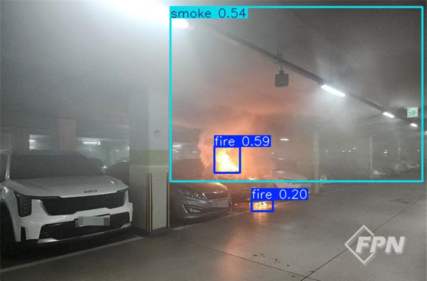
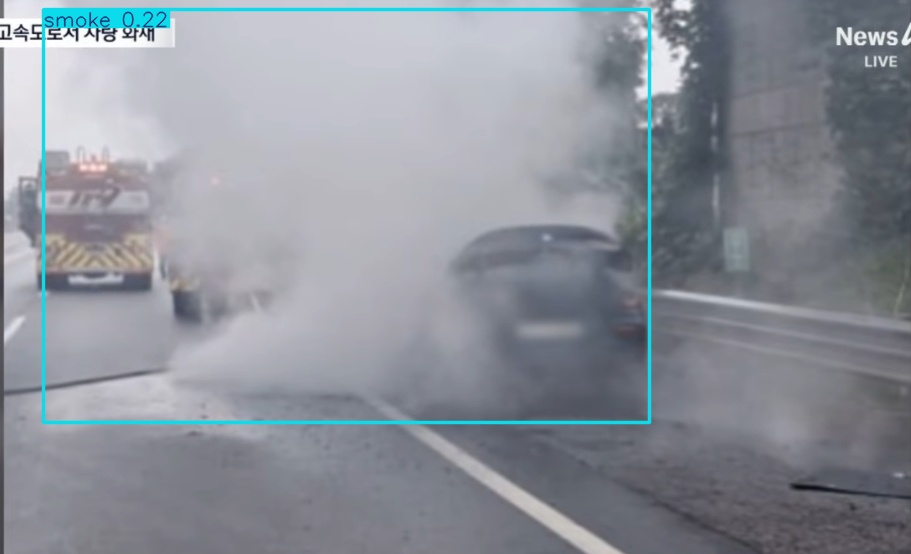
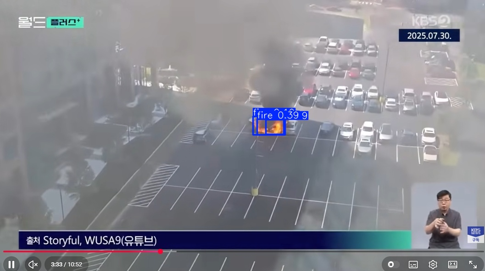
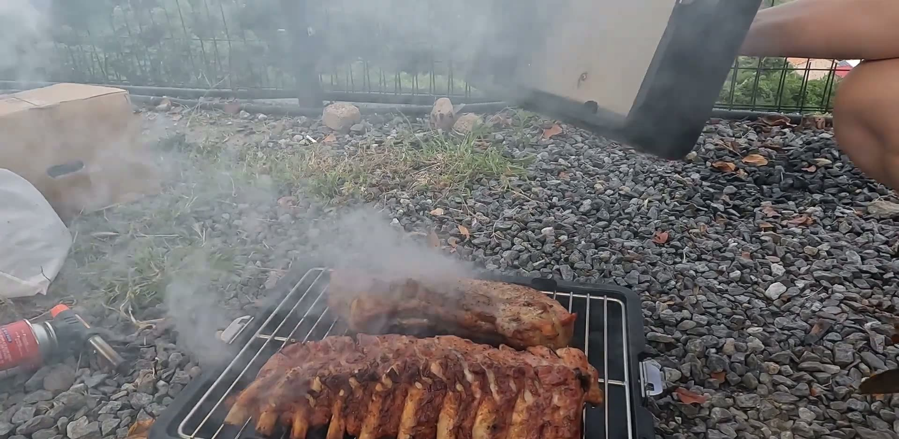
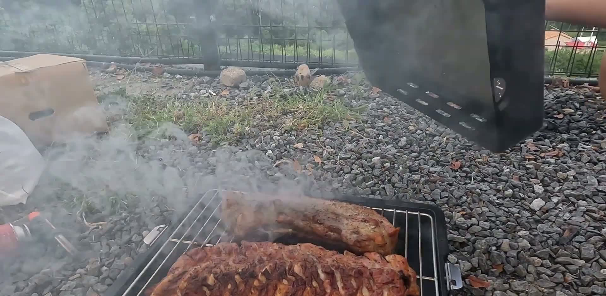
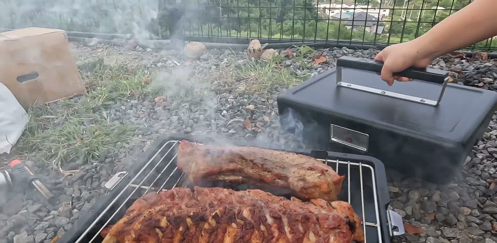
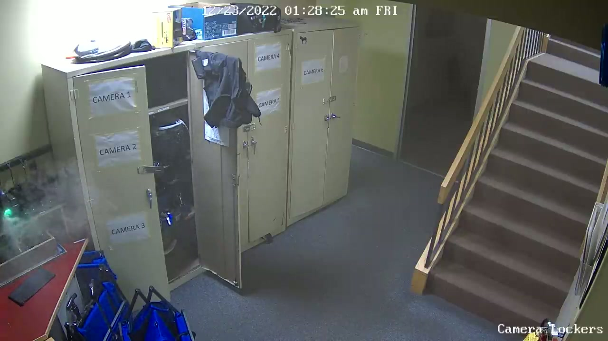
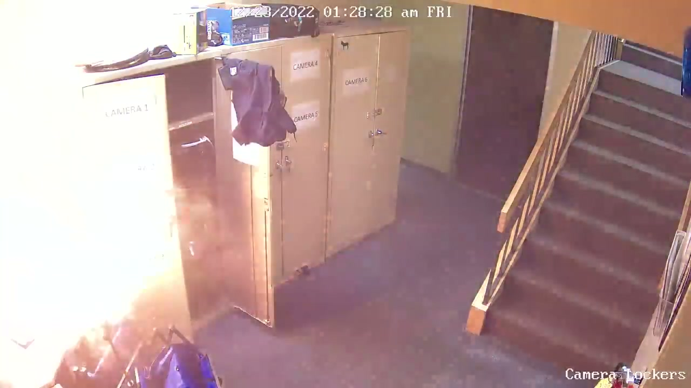
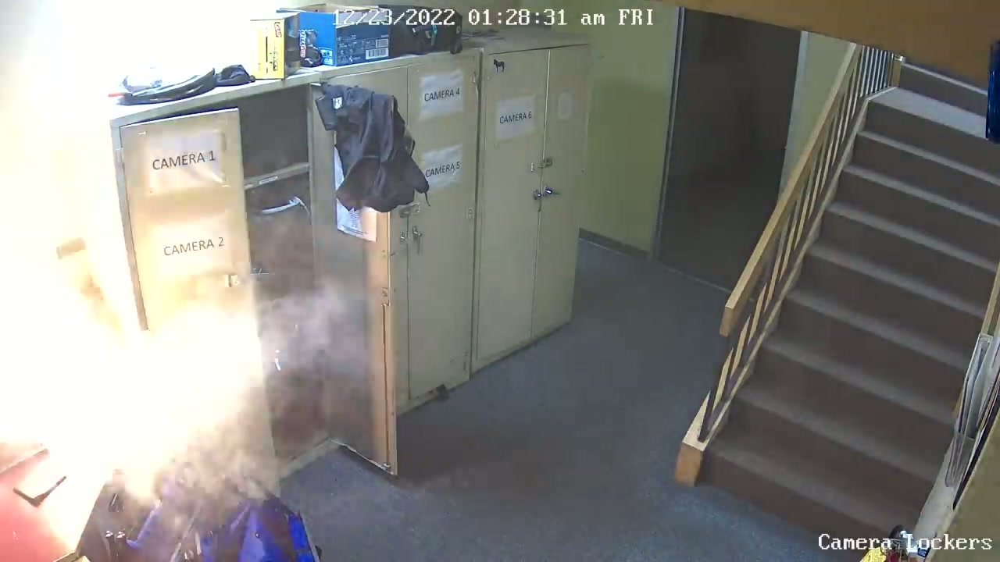
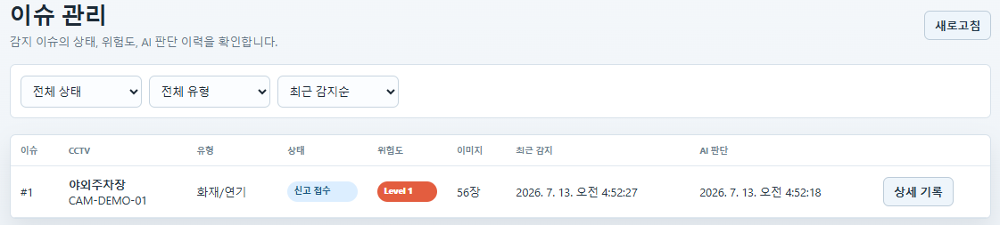

CCTV는 많지만 사람이 항상 볼 수 없다
CCTV는 영상을 촬영할 뿐 상황을 스스로 판단하지 못합니다. 관리자가 자리를 비우거나 여러 화면을 동시에 봐야 하는 상황에서는 위험 상황을 놓칠 수 있으므로, 일정 위험도 이상이면 자동모드로 119 신고까지 이어지는 구조가 필요합니다.
자동모드 기반 무인 대응 필요
사용한 데이터셋은 회전, 밝기 변화, 크기 조정 등의 Augmentation이 이미 적용된 상태로 제공되었다.
실제 CCTV 환경은 야간 촬영, 저조도 환경, 색상 왜곡 등이 빈번하다.
이를 반영하기 위해 Hue = 0.95 기반의 강한 색상 변형을 적용하여 흑백에 가까운 환경에서도 화재 및 연기 탐지가 가능하도록 학습하였다.
데이터셋 자체에 다양한 Augmentation이 포함되어 있어 추가적인 증강은 최소화하였다. 대신 실제 CCTV 환경의 특성을 반영하기 위해 강한 Hue 변형을 적용하여 조명 변화와 색상 왜곡에 대한 일반화 성능 향상을 목표로 하였다.




다양한 환경에서 화재 및 연기 객체를 탐지하는 것을 확인하였다. 추가로 저조도 환경 및 CCTV와 유사한 화질 조건에서도 안정적으로 객체를 검출하는 모습을 확인하였다.




조리 중 발생한 연기로 판단되어 119 신고 문구를 생성하지 않음




화염과 연기가 빠르게 확산되는 실제 화재로 판단하고 긴급 신고 필요로 분류
동일하게 YOLO가 화재 후보를 탐지하더라도, VLM은 주변 맥락과 시간 흐름을 함께 판단하여 무해한 연기와 실제 화재를 구분하고 자동 신고 여부를 제어한다.

진행 중인 Issue를 상태, 위험도, CCTV 기준으로 관리

YOLO 감지 결과와 VLM 판단, 대응 권장 사항을 함께 확인